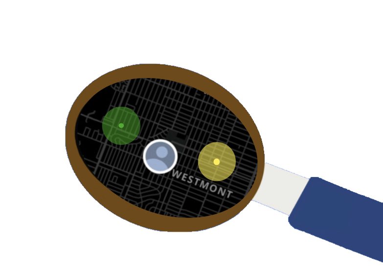

<!-- popover import -->
<script type="module">
  import { popoverController } from 'https://cdn.jsdelivr.net/npm/@ionic/core/dist/ionic/index.esm.js';
  window.popoverController = popoverController;
</script>


<!-- heading name and logo -->
<ion-header [translucent]="true">
  <ion-toolbar>
    <ion-title >
      <h1 id="name1">DigiHealth </h1>
      
    </ion-title>
  </ion-toolbar>
</ion-header>

<ion-content [fullscreen]="true">
  <!-- <ion-header collapse="condense">
    <ion-toolbar>
      <ion-title size="large">Tab 1</ion-title>
    </ion-toolbar>
  </ion-header>
   
  <app-explore-container name="Tab 1 page"></app-explore-container> -->

  <div #map id="map"></div>
  <input/> 
</ion-content>

